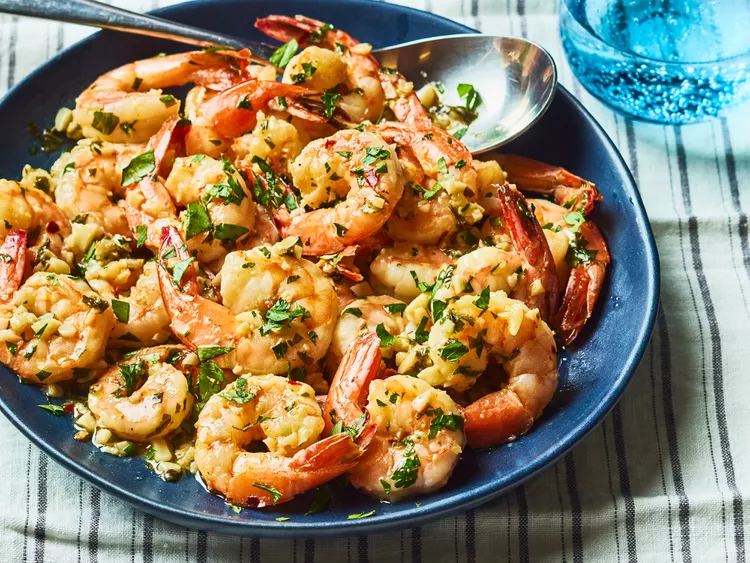

Simple Garlic shrimp

Description
A fast and delicious recipe. Give it a go!
Ingredients
- 1 1⁄2 tablespoons olive oil
- 1 pound shrimp, peeled and deveined
- salt to taste
- 6 cloves garlic, finely minced
- 1⁄4 teaspoon red pepper flakes
- 3 tablespoons lemon juice
- 1 tablespoon caper brine
- 2 tablespoons cold butter, cut into 4 equal pieces, divided
- 1⁄3 cup chopped flat-leaf parsley
- 1 teaspoon water, or as needed
Cooking directions
- Gather all ingredients.
- Heat olive oil in a heavy skillet over high heat until it just begins to smoke.
- Place shrimp in an even layer on the bottom of the pan and cook for 1 minute without stirring.
- Season shrimp with salt; cook and stir until shrimp begin to turn pink, about 1 minute.
- Add garlic and red pepper flakes; cook and stir for 1 minute.
- Stir in lemon juice, caper brine, 1 piece of butter, and 1⁄2 of the parsley; cook until butter has melted, about 1 minute.
- Reduce heat to low and stir in remaining 3 pieces butter.
- Cook and stir until butter has melted, sauce is thick, and shrimp are pink and opaque, 2 to 3 minutes.
- Remove shrimp with a slotted spoon and transfer to a bowl.
- Continue to cook butter sauce, adding water, 1 teaspoon at a time, if too thick, about 2 minutes.
- Season with salt to taste; serve shrimp topped with the pan sauce and remaining parsley. Enjoy!